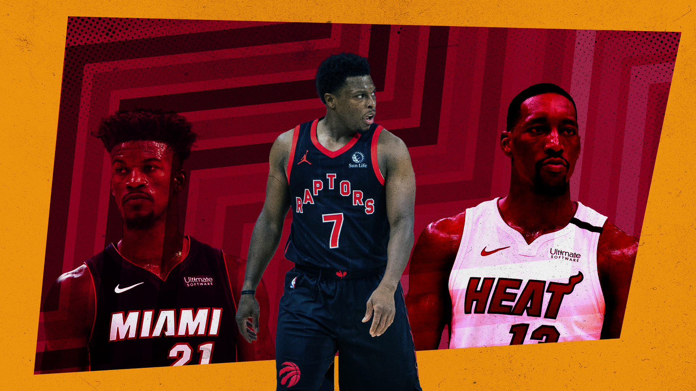

Where are the Miami Heat going?
Sean Carroll illustration
A fter signing Kyle Lowry and PJ Tucker and re-signing Jimmy Butler, Duncan Robinson and Victor Oladipo, the Miami Heat have pretty much hard-capped themselves, locking into this team for the foreseeable future.
Each of the deals are great in a vacuum (if they pass the tampering rules), they locked up the underdog fetishiser in Butler, they signed the best point guard on the market with Lowry and solidified their supporting cast elsewhere. But what for?
In a potential series against the Brooklyn Nets, Philadelphia 76ers, Milwaukee Bucks, Golden State Warriors, LA Lakers, possibly even the Denver Nuggets or Dallas Mavericks, the Heat won’t have the best player on the court
We all know how important superstars are in today’s NBA, we’re even seeing the league pay exorbitant prices in terms of trades for the chances at these stars and the Miami Heat don’t have one.
Of course, the Heat thought this free agency period was going to be the one where they signed Giannis Antetokoumnpo, but he had other ideas. They did their best with the situation they were given (take some fucking notes David), but where does that leave them?
Does this team go all the way to the Finals again? Can they make some noise in the playoffs? What’s the ceiling for this roster?
Pat Riley is 76 years old and we’ve been saying this for years now, but surely this is his final gambit. How many more times will I have to hear Bill Simmons say “he threw his rings on the table and got the free agent he wanted”?
How will they fare in 2021-22?
While the team might not have the best player on the court at all times, there’s every chance they’ll have the best lineup on the court at all times.
Kyle Lowry will do Kyle Lowry things, Jimmy Butler will do Jimmy Butler things, Duncan Robinson will get even more open threes with better teammates, Bam Adebayo will continue to grow into a Defensive Player of the Year centre, and who knows what versions of Tyler Herro and Victor Oladipo show up (they can’t be worse than 2021, can they?).
In 2020-21, the Miami Heat were 19th in offensive efficiency and eighth in defensive efficiency according to Cleaning the Glass. Despite that ugly offensive number, they had the league’s fourth-best win differential and were out-grinding teams.
Surprisingly, dunksandthrees.com gave them a -0.1 adjusted net rating, good for 17th place in the league when factoring in strength of schedule.
The team got a lot of their shots in solid areas, seventh in the league from three and in the top half of shots at the rim. This was complemented by a 68.1 percent field goal percentage at the rim, the second-best mark in the league but a bottom-half 36.2 percent from behind the arc.
Kyle Lowry comes in as a hard-nosed playmaker who creates more shots for his teammates while getting them higher percentage looks.
When Lowry was on the court this past season, his team shot +5.2 percent more shots from three, making them +3 percent more and +5.5 percent from the corners per Cleaning the Glass. He struggled at helping teammates score inside, but it’s not necessary for an already strong Miami team.
PJ Tucker, alongside other role player additions in Markieff Morris and Dewayne Dedmon, are beneficiaries of the offensive system and likely won’t have much of an impact on that end.
If they can hold on to their stellar defence and crawl up to a top-ten offensive team, can this roster make some noise?
In my opinion, that doesn’t get it done. We’ve seen time and time again how far an excellent regular season team can take you. This Heat team has all the makings of a 60-win team, but just like the Utah Jazz, you can have all the Mike Conleys and Rudy Goberts in the world, but it doesn’t matter if you don’t have the best player on the court.
When this team faces off against the Brooklyn Nets, PJ Tucker can look competent but Kevin Durant will still hit hesi pull-up jimbos all over his five o’clock shadow.
The age-old saying is that defence wins championships. That’s completely true, but while this team might have the best defence in the league, so will other title contenders with bigger stars.
I’m happily sending the above prediction to print, but I will acknowledge that telling Jimmy he can’t do it is like wearing a [redacted]... he gets off on it. Better yet, he has already taken a similar team to the Finals less than two years ago. Still, I don’t see it happening again.
Are there any trades on the horizon?
One of the best parts about having plenty of excellent role players and a crop of young talent is being able to get in trade discussions.
If there’s a team out there with a disgruntled superstar, Miami could offer a mid-level salary (Robinson), a blue-chip prospect (Herro), plenty of future draft picks (2024 onwards) and swing for a star.
Let’s use the example of Bradley Beal and the Washington Wizards, a player who could be on the move in the near future. If the Heat want to trade for Beal, they’ll have to send out more than Robinson because any deal would see Miami take back more than they’re able to give back.
Okay, no worries, let’s look elsewhere on the roster:
- Lowry’s $27 million - well he’s probably part of the reason Beal would want to come to Miami in the first place. Also, swapping Lowry for Beal might be a sidestep instead of a true step forwards.
- Jimmy’s $36 million - again, part of the reason both sides would want another star is to ADD another star, not swap.
- Bam’s $28 million - while he isn’t the biggest name on the team, he’s instrumental to what Miami does on both ends of the court. Also, it’d leave the Heat without a starting centre.
- PJ’s mid-level exception deal - doesn’t make the money match.
- Herro’s rookie deal - doesn’t go a long way in matching money and he’s already in the deal as the ‘blue-chip prospect’.
Outside of those players, everyone else is on a rookie deal, two-way contract or veteran’s minimum.
Since Miami is right up against the hard cap, they don’t have any financial wiggle room that they would otherwise have to match incoming salaries. Signing one more player to the veterans minimum (Udonis Haslem, for example) would push them into the luxury tax.
Combining Robinson and Herro’s salaries, multiplied by 125% (which is the maximum number tax-paying teams can receive in a trade) gets you up to $24.46 million. Does anyone have a superstar on that number (or less) and loves those two players and picks more than another package?
Players in that salary range and below next season are Draymond Green, Nikola Vucevic, Buddy Hield and Malcolm Brogdon. Not exactly stars. From there, the best value contracts are on rookie-scale deals and probably not moving.
The only other significant mid-season trade option would look like Robinson for a different player of his calibre (with up to 125% of Robinson’s salary). But those kinds of role player for role player trades are almost irrelevant and rarely make a roster considerably better.
So the team we’re looking at today is the team you’ll be looking at when the playoffs start, plus or minus some minimum guys who get picked up mid-season. I’ll ask the same question, is that enough?
Okay Sean, you think you’re all that, what’s the alternative?
What else could the Miami Heat have done? If they don’t go after Kyle Lowry, they keep Goran Dragic’s expiring contract, they keep Precious Achiuwa and they roll into next season with a team that got swept by the Milwaukee Bucks in the first round.
With more financial flexibility, maybe they can swing a deal at the deadline with Dragic’s contract and two young prospects (Herro and Achiuwa). But that puts a lot of stock in a superstar even being available mid-season and the receiving team preferring Miami’s offer compared to… oh, I don’t know… Moses Moody, Jonathan Kuminga and James Wiseman?
This free agency spending spree is a repercussion for a risk Riley and the Heat brass knew they were taking when they went all in on Giannis’ free agency.
By prioritising 2021 cap space, the Heat let Jae Crowder walk last offseason, they traded Justise Winslow for Andre Igoudala and made it so his contract expired this offseason, they let Derrick Jones Jr. move to Portland and traded for Victor Oladipo only a few months before free agency.
Considering this was Miami’s backup plan, it’s a pretty damn good one. Instead of signing an MVP and DPoY, you sign an All-NBA guard who is looking to win a ring in the twilight of his career.
Instead of surrounding Giannis with role players, you roll out one of the more dangerous five-man lineups in the league. Pretty solid consolation prize.
But without a Giannis, or any superstar for that matter, this Miami team is doomed to fall short of the ultimate goal
Yes, Pat Riley might’ve ended up with the most successful offseason of 2021, but it wasn’t nearly as successful as he hoped. Now, with this team locked in, he has to hope Miami can recapture the magic of 2020 and make the Finals one more time.